13: Reactions at the ⍺-carbon, part II
Contents
13: Reactions at the ⍺-carbon, part II#

Photo credit: http://www.mixedfitness.com/
Introduction#
We begin this chapter with the story of two men, and two chemical reactions.
The two men couldn’t be more different. One was an acclaimed scientist who lived and continued to work productively into his eighties. The other was struck down as a young boy by what was assumed at the time to be a fatal disease. With the heroic support of his parents and caregivers, though, he lived to his thirtieth birthday and provided the inspiration for development of a medical treatment that could potentially save thousands of lives.
The two chemical reactions in this story are closely related, and both involve the metabolism of fats in the human body. One serves to build up fatty acid chains by repeatedly linking together two-carbon units, while the other does the reverse, progressively breaking off two-carbon pieces from a long chain fatty acid molecule. The life and work of the two men are inextricably linked to the two reactions, and while we will be learning all about the reactions in the main part of this chapter, we’ll begin with the stories of the two men.
On a Saturday in January of 2007, Dr. Hugo Moser passed away in the Johns Hopkins Hospital in Baltimore, succumbing to pancreatic cancer. He was 82 years old. A neurologist who had taught and researched for much of his career at Johns Hopkins, he was well known for his workaholic nature: he had signed off on his last grant application while on the way to the hospital for major surgery just a few months previously. Two days after his death, his wife and colleague Ann Moser was back in their lab, because, she said, “He gave us all a mandate to continue with the work”. Dr. Moser was a highly esteemed scientist who had devoted his life to understanding and eventually curing a class of devastating neurodegenerative diseases, most notably adrenoleukodystrophy, or ALD. In his work he was careful, rational, painstaking, and relentless – a classic scientist. But in the minds of many movie fans, he became a Hollywood villain.
Only 17 months after the death of Dr. Moser, newspapers around the world published moving obituaries marking the passing, at age 30, of Lorenzo Odone. In one, written by his older sister and published in the British newspaper The Guardian, Lorenzo as a young boy is described as “lively and charming …he displayed a precocious gift for languages as he mastered English, Italian and French. He was funny, articulate and favored opera over nursery rhymes.” But for more than 20 years leading up to his death, he had been confined to a wheelchair, blind, paralyzed, and unable to communicate except by blinking his eyes. Because he was unable to swallow, he needed an attendant to be with him around the clock to suction saliva from his mouth so he wouldn’t choke.
When he was he six years old, Lorenzo started to show changes in behavior: a shortening attention span, moodiness. More disturbing to his parents, Augusto and Michaela Odone, was their suspicion that he was having trouble hearing. They took him in to be examined, and although his hearing was fine, the doctors noticed other behavioral symptoms that concerned them, and so ordered more neurological tests. The results were a kick to the stomach: Lorenzo had a fatal neurodegenerative disease called adrenoleukodystrophy. There was no cure; his nervous system would continue to degenerate, and he would probably be dead within two years.
What happened next became such a compelling story that it was eventually retold by director George Miller in the 1992 movie Lorenzo’s Oil, starring Nick Nolte and Susan Sarandon as Augusto and Michaela Odone and Peter Ustinov as a character based on Dr. Hugo Moser. The Odones were unwilling to accept the death sentence for their son and, despite having no scientific or medical training, set about to learn everything they could about ALD.
They found out that the cause of ALD is a mutation in a gene that plays an important role in the process by which saturated fatty acids of 26 or more carbons are broken down in the body. When these ‘very long chain fatty acids’ (VLCFAs) accumulate to excessive levels, they begin to disrupt the structure of the myelin sheath, a protective fatty coating around nerve axons, leading eventually to degradation of the nervous system.
Researchers had found that restricting dietary intake of VLCFAs did not help – apparently much of the damage is done by the fats that are naturally synthesized by the body from shorter precursors. The Odones realized that the key to preventing destruction of the myelin sheath might be to somehow disrupt the synthesis of VLCFAs in Lorenzo’s cells. The breakthrough came when they came across studies showing that the carbon chain-elongating enzyme responsible for producing VLCFAs is inhibited by oleic and erucic acids, which are monounsaturated fatty acids of 18 and 22 carbons, respectively and are found in vegetable oils.

fig 38a
Administration of a mixture of these two oils, which eventually came to be known as ‘Lorenzo’s Oil’ , was shown to lead to a marked decrease in levels of VLCFAs in ALD patients.
This was, however, a therapy rather than a miracle cure – and tragically for the Odones and the families of other children afflicted with ALD, the oil did not do anything to reverse the neurological damage that had already taken place in Lorenzo’s brain. Although he was profoundly disabled, with round-the-clock care and a daily dosage of the oil Lorenzo was able to live until a day after his 30th birthday, 22 years longer than his doctors had predicted.
The story does not end there. Although the discovery of the treatment that bears his name came too late for Lorenzo Odone, might daily consumption of the oil by young children who are at a high genetic risk for ALD possibly prevent onset of the disease in the first place, allowing them to live normal lives? This proposal was not without a lot of controversy. Many ALD experts were very skeptical of the Lorenzo’s oil treatment as there was no rigorous scientific evidence for its therapeutic effectiveness, and indeed erucic oil was thought to be potentially toxic in the quantities ingested by Lorenzo. Most doctors declined to prescribe the oil for their ALD patients until more studies could be carried out. The Hollywood version of Lorenzo’s story cast the medical and scientific establishment, and Dr. Hugo Moser in particular, in a strikingly negative light – they were portrayed as rigid, callous technocrats who cared more about money and academic prestige than the lives of real people. Dr. Moser was not mentioned by name in the movie, but the character played by Peter Ustinov was based closely on him: as his obituary in the Washington Post recounts, Dr. Moser once told an interviewer “The good guys were given real names. The bad guys were given pseudonyms.”
What Hugo Moser in fact did was what a good scientist should always do: he kept an open mind, set up and performed careful, rigorous experiments, and looked at what the evidence told him. In a 2005 paper, Moser was finally able to confidently report his results: when young children at risk of developing ALD were given a daily dose of Lorenzo’s oil, they had significantly better chance of avoiding the disease later on.
When he died, Dr. Moser was tantalizingly close to demonstrating conclusively that a simple and rapid blood test that he and his team had developed could reliably identify newborns at high risk of developing ALD – but it was not until after his death that his colleagues, including his wife, Ann Moser, were able to publish results showing that the test worked. The hope is that many lives might be saved by routinely screening newborns for ALD and responding with appropriate preventive treatments - possibly including Lorenzo’s oil.
The biochemical reactions at the heart of the Lorenzo’s oil story – the carbon-carbon bond forming and bond breaking steps in the synthesis and degradation of fatty acids - both involve chemistry at the α-carbon and proceed through enolate intermediates, much like the aldol and isomerization reactions we studied in chapter 11. They are known as ‘Claisen condensation’ and ‘retro-Claisen cleavage’ reactions, respectively, and represent another basic mechanistic pattern - in addition to the aldol reaction - that is ubiquitous in metabolism as a means of forming or breaking carbon-carbon bonds.
To begin this chapter, we will first learn about ‘carboxylation’ and ‘decarboxylation’ reactions, in which organic molecules gain or lose a bond to carbon dioxide, respectively, in a mechanism that is really just an extension of the aldol/retro-aldol reactions we learned about in the previous chapter. As part of this discussion, we will work through the mechanism of the carbon-fixing enzyme in plants commonly known as ‘Rubisco’, which is thought to be the most abundant enzyme on the planet. Then, we will move to the Claisen reactions that are so central to lipid metabolism and the story of Lorenzo Odone. Finally, we will study ‘conjugate additions’ and ‘β-eliminations’, common reaction patterns that involve double bonds in the α−β position relative to a carbonyl group, and which, again, proceed via enolate intermediates.
13.1: Decarboxylation#
Many carbon-carbon bond-forming and bond-breaking processes in biological chemistry involve the gain or loss, by an organic molecule, of a single carbon atom in the form of CO2. You undoubtedly have seen this chemical equation before in an introductory biology or chemistry class:
6CO2(g) + 6H2O(l) + energy → C6H12O6(aq) + 6O2(g)
This of course represents the photosynthetic process, by which plants (and some bacteria) harness energy from the sun to build glucose from individual carbon dioxide molecules. The key chemical step in plants in which a carbon dioxide molecule is ‘fixed’ (linked to a larger organic molecule) is a carboxylation reaction, and is catalyzed by the enzyme ribulose 1,5-bisphosphate carboxylase, commonly known as Rubisco.
The reverse chemical equation is also probably familiar to you:
C6H12O6(aq) + 6O2(g) → 6CO2(g) + 6H2O(l) + energy
This equation expresses what happens in the process known as respiration: the oxidative breakdown of glucose to form carbon dioxide, water, and energy (in a non-biological setting, it is also the equation for the uncatalyzed combustion of glucose). In respiration, each of the carbon atoms of glucose is eventually converted to a CO2 molecule. The process by which a carbon atom - in the form of carbon dioxide - breaks off from a larger organic molecule is called decarboxylation.
We will look now at the biochemical mechanism of decarboxylation reactions. Later in the chapter, we will look at the carboxylation reaction catalyzed by the Rubisco enzyme.
Decarboxylation steps occur at many points throughout central metabolism. Most often, the substrate for a decarboxylation step is a β-carboxy ketone or aldehyde.
Decarboxylation of a β-carboxy ketone or aldehyde:

Mechanism:
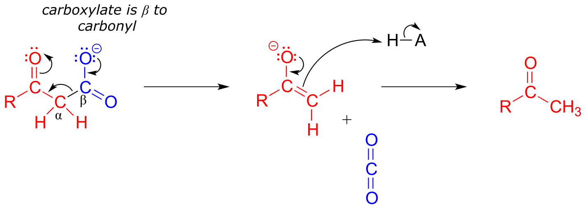fig 40
Just as in a retro-aldol reaction, a carbon-carbon bond is broken, and the electrons from the broken bond must be stabilized for the step to take place. Quite often, the electrons are stabilized by the formation of an enolate, as is the case in the general mechanism pictured above.
The electrons from the breaking carbon-carbon bond can also be stabilized by a conjugated imine group and/or by a more extensively conjugated carbonyl.

fig 42
The key in understanding decarboxylation reactions is to first mentally ‘push’ the electrons away from the carboxylate group, then ask yourself: where do these electrons go? If the electrons cannot ‘land’ in a position where they are stabilized, usually by resonance with an oxygen or nitrogen, then a decarboxylation is very unlikely.
The compound below is not likely to undergo decarboxylation:

fig 41
Be especially careful, when drawing decarboxylation mechanisms, to resist the temptation to treat the CO2 molecule as the leaving group in a mechanistic sense:

fig 43
The above is not what a decarboxylation looks like! (Many a point has been deducted from an organic chemistry exam for precisely this mistake!) Remember that in a decarboxylation step, it is the rest of the molecule that is, in fact, the leaving group, ‘pushed off’ by the electrons on the carboxylate.
Decarboxylation reactions are generally thermodynamically favorable due to the entropic factor: one molecule is converted into two, one of which is a gas - this represents an increase in disorder (entropy). Enzymatic decarboxylation steps in metabolic pathways are also generally irreversible.
Below are two decarboxylation steps (EC 1.1.1.42; EC 1.1.1.43) in central catabolic metabolism (specifically the citric acid cycle and pentose phosphate pathway catabolism, respectively). Each step representing a point at which a carbon atom derived from the food we eat is released as carbon dioxide:

fig 44
Exercise 13.1:
Draw mechanistic arrows showing the carbon-carbon bond breaking step in each of the reactions shown above.
The reaction catalyzed by acetoacetate decarboxylase (EC 4.1.1.4) relies on an imminium (protonated imine) link that forms temporarily between the substrate and a lysine residue in the active site, in a strategy that is similar to that of the enamine-intermediate aldolase reactions we saw in chapter 12. (Recall from section 7.5 that the pKa of an imminium cation is approximately 7, so it is generally accurate to draw either the protonated imminium or the neutral imine in a biological organic mechanism).

fig 45
Exercise 13.2: Draw a mechanism for the carbon-carbon bond breaking step in the acetoacetate decarboxylase reaction.
Exercise 13.3: Which of the following compounds could be expected to potentially undergo decarboxylation? Draw the mechanistic arrows for the decarboxylation step of each one you choose, showing how the electrons from the breaking carbon-carbon bond can be stabilized by resonance.

fig45a
13.2: An overview of fatty acid metabolism#
In the introduction to this chapter, we learned about a patient suffering from a rare disease affecting fatty acid metabolism. The reaction mechanisms that we are about to learn about in the next two sections are central to the process by which fatty acids are assembled (synthesis) and taken apart (degradation), so it is worth our time to go through a brief overview before diving into the chemical details.
Fatty acid metabolism is a two-carbon process: in the synthetic directions, two carbons are added at a time to a growing fatty acid chain, and in the degradative direction, two carbons are removed at a time. In each case, there is a four-step reaction cycle that gets repeated over and over. We will learn in this chapter about steps I and III in the synthesis direction, and steps II and IV in the degradative direction. The remaining reactions, and the roles played by the coenzymes involved, are the main topic of chapter 15.
Fatty acid synthesis:
‘ACP’ stands for ‘acyl carrier protein’, which is a protein that links to growing fatty acid chains through a thioester group (see section 11.5A)
Step I: Condensation (covered in section 13.3A)

Step II: Ketone hydrogenation (covered in section 15.3)

Step III: Elimination (covered in section 13.4)
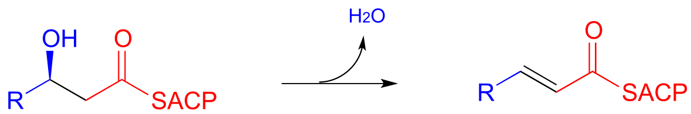
Step IV: Alkene hydrogenation (covered in section 15.4)

… back to step I, add another malonyl-ACP, repeat.
fig 31a
Fatty acid degradation:
Step I: Alkane oxidation (covered in section 15.4)

Step II: Addition of water (covered in section 13.4)
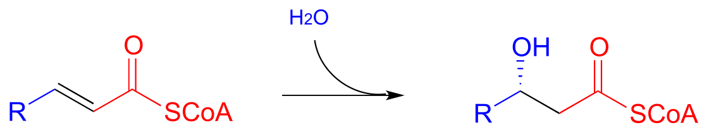
Step III: Oxidation of alcohol (covered in section 15.3)

Step IV: Cleavage (covered in section 13.3C)
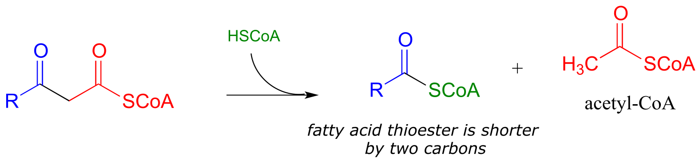
… back to step I
fig 31b
When looking at these two pathways, it is important to recognize that they are not the reverse of each other. Different coenzymes are in play, different thioesters are involved (coenzyme A in the degradative direction, acyl carrier protein in the synthetic direction), and even the stereochemistry is different (compare the alcohols in steps II/III of both pathways). As you will learn in more detail in a biochemistry course, metabolic pathways that work in opposite directions are generally not the exact reverse of each other. In some, like fatty acid biosynthesis, all of the steps are catalyzed by different enzymes in the synthetic and degradative directions. Other ‘opposite direction’ pathways, such as glycolysis/gluconeogenesis, contain mostly reversible reactions (each catalyzed by one enzyme working in both directions), and a few irreversible ‘check points’ where the reaction steps are different in the two directions. As you will learn when you study metabolism in biochemistry course, this has important implications in how two ‘opposite direction’ metabolic pathways can be regulated independently of one another.
Recall that in Chapter 12 we emphasized the importance of two reaction types - the aldol addition and the Claisen condensation - in their role in forming (and breaking) most of the carbon-carbon bonds in a living cell. We have already learned about the aldol addition, and its reverse, the retro-aldol cleavage. Now, we will study the Claisen condensation reaction, and its reverse, the retro-Claisen cleavage. Step I in fatty acid synthesis is a Claisen condensation, and step IV in fatty acid degradation is a retro-Claisen cleavage.
In section 13.4, we will look more closely at the reactions taking place in step III of fatty acid synthesis (an elimination) and step II of fatty acid degradation (a conjugate addition)
13.3: Claisen condensation#
13.3A: Claisen condensation - an overview#
Recall the general mechanism for a nucleophilic acyl substitution mechanism, which we studied in chapter 10:

fig 31
The major points to recall are that a nucleophile attacks a carboxylic acid derivative, leading to a tetrahedral intermediate, which then collapses to expel the leaving group (X). The whole process results in the formation of a different carboxylic acid derivative.
A typical nucleophilic acyl substitution reaction might have an alcohol nucleophile attacking a thioester, driving off a thiol and producing an ester.

fig 32
If, however, the attacking nucleophile in an acyl substitution reaction is the α-carbon of an enolate, a new carbon-carbon bond is formed. This type of reaction is called a Claisen condensation, after the German chemist Ludwig Claisen (1851-1930).
A Claisen condensation reaction

Mechanism:
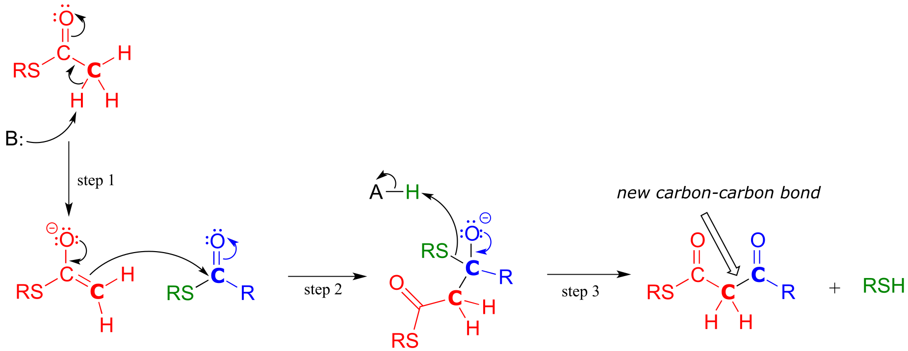fig 33
In step 1, the α−carbon of one thioester substrate is deprotonated to form an enolate, which then goes on to attack the second thioester substrate (step 2). Then the resulting tetrahedral intermediate collapses (step 3), expelling the thiol leaving group and leaving us with a β-keto thioester product (a thioester with a ketone group two carbons away).
To reiterate: A Claisen condensation reaction is simply a nucleophilic acyl substitution (Chapter 11) reaction with an enolate carbon nucleophile.
13.3B: Biochemical Claisen condensation examples#
A Claisen condensation between two acetyl CoA molecules (EC 2.3.1.9) serves as the first step in the biosynthesis of cholesterol and other isoprenoid compounds in humans (see section 1.3A for a reminder of what isoprenoids are). First, a transthioesterase reaction transfers the acetyl group of the first acetyl CoA to a cysteine side chain in the enzyme’s active site (steps a, b). (This preliminary event is typical of many enzyme-catalyzed Claisen condensation reactions, and serves to link the electrophilic substrate covalently to the active site of the enzyme).
In the ‘main’ part of the Claisen condensation mechanism, the α-carbon of a second acetyl CoA is deprotonated (step 1), forming a nucleophilic enolate.
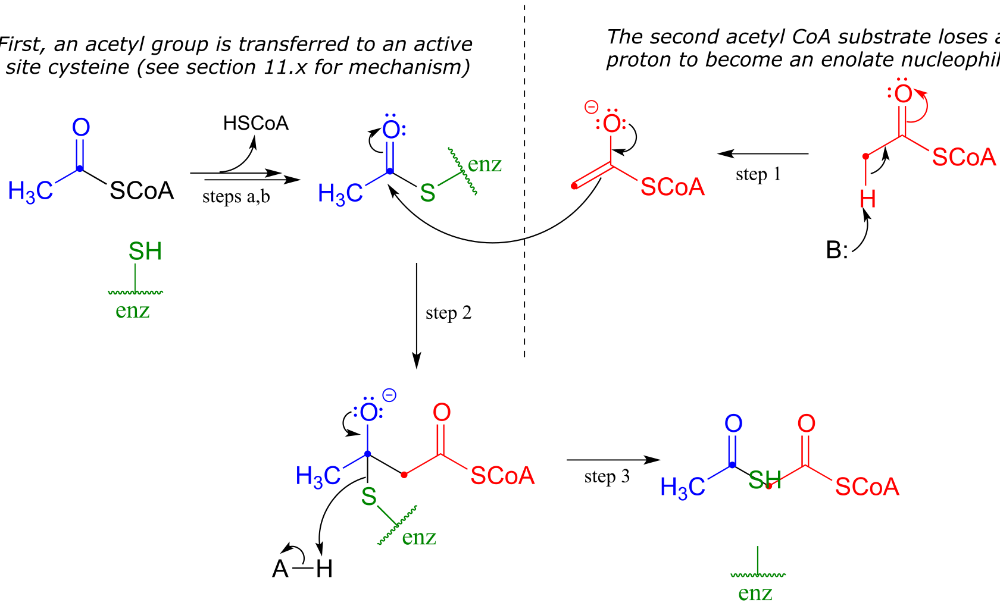
fig 34
The enolate carbon attacks the electrophilic thioester carbon, forming a tetrahedral intermediate (step 2) which collapses to expel the cysteine thiol (step 3).
Exercise 13.4: Draw curved arrows for the carbon-carbon bond-forming step in mechanism for this condensation reaction between two fatty acyl-thioester substrates. R1 and R2 can be hydrocarbon chains of various lengths. (J. Biol. Chem. 2011, 286, 10930.)
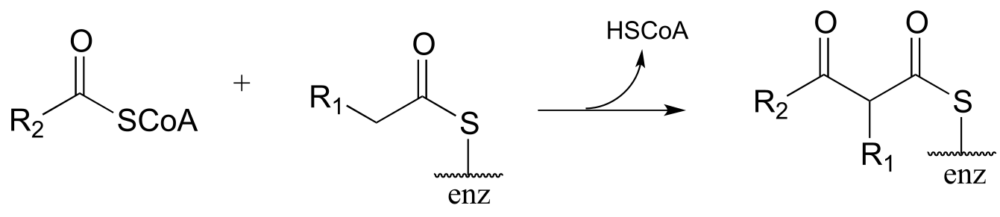
fig 34a
In an alternative mechanism, Claisen condensations in biology are often initiated by decarboxylation at the α−carbon of a thioester, rather than by deprotonation:
Decarboxylation/Claisen condensation:

Mechanism:

fig 45d
The thing to notice here is that the nucleophilic enolate (in red) is formed in the first step by decarboxylation, rather than by deprotonation of an α-carbon. Other than that, the reaction looks just like the Claisen condensation reactions we saw earlier.
Now, we can finally understand the fatty acid chain-elongation step that we heard about in the chapter introduction in the context of the Lorenzo’s oil story, which is a decarboxylation/Claisen condensation between malonyl-ACP (the donor of a two-carbon unit) and a growing fatty acyl CoA molecule. Notice that, again, the electrophilic acyl group is first transferred to an active site cysteine, which then serves as the leaving group in the carbon-carbon bond forming process.
Chain elongating (Claisen condensation) reaction in fatty acid biosynthesis
(step 1 in fatty acid synthesis cycle)

Mechanism:

fig 45b
Exercise 13.5: Curcumin is the compound that is primarily responsible for the distinctive yellow color of turmeric, a spice used widely in Indian cuisine. The figure below shows the final step in the biosynthesis of curcumin. Draw a mechanism for this step.

13.3C: Retro-Claisen cleavage#
Just like the aldol mechanism, Claisen condensation reactions often proceed in the ‘retro’, bond-breaking direction in metabolic pathways.
A typical Retro-Claisen cleavage reaction
(thiol nucleophile)
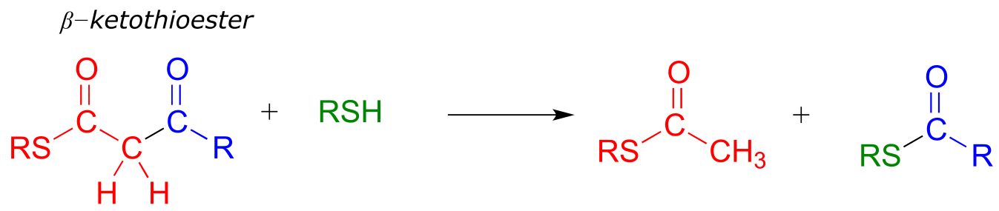Mechanism:

fig 35
In a typical retro-Claisen reaction, a thiol (or other nucleophile such as water) attacks the carbonyl group of a β-thioester substrate (step 1), and then the resulting tetrahedral intermediate collapses to expel an enolate leaving group (step 2) - this is the key carbon-carbon bond-breaking step. The leaving enolate reprotonates (step 3) to bring us back to where we started, with two separate thioesters. You should look back at the general mechanism for a forward Claisen condensation and convince yourself that the retro-Claisen mechanism illustrated aboveis a step-by-step reverse process.
Exercise 13.6: Is a decarboxylation/Claisen condensation step also likely to be metabolically relevant in the ‘retro’ direction? Explain.
When your body ‘burns’ fat to get energy, it is a retro-Claisen cleavage reaction (EC 2.3.1.16) that is responsible for breaking the carbon-carbon bonds in step IV of the fatty acid degradative pathway. A cysteine thiol on the enzyme serves as the incoming nucleophile (step 1 in the mechanism below), driving off the enolate leaving group as the tetrahedral intermediate collapses (step 2). The enolate is then protonated to become acetyl CoA (step 3), which goes on to enter the citric acid (Krebs) cycle. Meanwhile, a transthioesterification reaction occurs (steps a and b) to free the enzyme’s cysteine residue, regenerating a fatty acyl CoA molecule which is two carbons shorter than the starting substrate.
The retro-Claisen reaction (step IV) in fatty acid degradation

Mechanism:

fig 36
Exercise 13.7: In a step in the degradation if the amino acid isoleucine, the intermediate compound 2-methyl-3-keto-butyryl CoA undergoes a retro-Claisen cleavage. Predict the products..
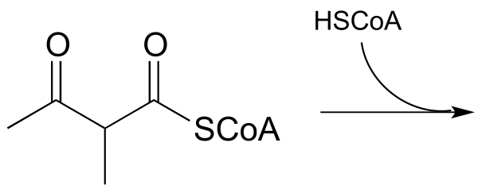
fig 36a
Exercise 13.8: Many biochemical retro-Claisen steps are hydrolytic, meaning that water, rather than a thiol as in the example above, is the incoming nucleophile that cleaves the carbon-carbon bond. One example (EC 3.7.1.2) occurs in the degradation pathway for tyrosine and phenylalanine:

fig 36a
a) Propose a likely mechanism for the reaction shown.
b) The β-diketone substrate in the reaction above could hypothetically undergo a different retro-Claisen cleavage reaction in which the nucleophilic water attacks the other ketone group. Predict the products of this hypothetical reaction.
13.4: Conjugate addition and β-elimination#
In this section, we will look at two more common biochemical reactions that proceed through enolate intermediates. In a typical conjugate addition, a nucleophile and a proton are ‘added’ to the two carbons of an alkene which is conjugated to a carbonyl (i.e. in the α−β position). In a β-elimination step, the reverse process occurs:

fig 46
In chapter 9 we learned about nucleophilic carbonyl addition reactions, including the formation of hemiacetals, hemiketals, and imines. In all of these reactions, a nucleophile directly attacks a carbonyl carbon.

fig 47
If, however, the electrophilic carbonyl is β-unsaturated - if, in other words, it contains a double bond conjugated to the carbonyl - a different reaction pathway is possible. A resonance structure can be drawn in which the β-carbon has a positive charge, meaning that the β-carbon also has the potential to be an electrophilic target.

fig 48
If a nucleophile attacks at the β-carbon, an enol or enolate intermediate results (step 1 below). In many cases this intermediate collapses and the α-carbon is protonated (step 2). This type of reaction is known as a conjugate addition.
Mechanism of a conjugate addition reaction
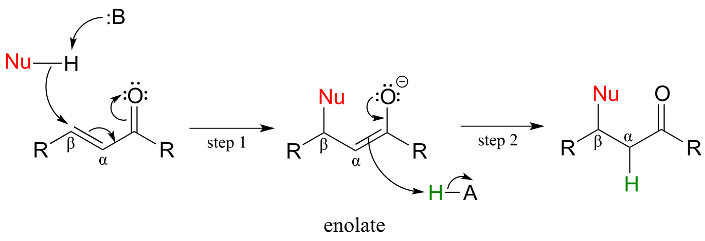
fig 49
The reverse of a conjugate addition is a β-elimination, and is referred to mechanistically the abbreviation E1cb.
Mechanism of an E1cB elimination

fig 50
The E stands for ‘elimination’; the numeral 1 refers to the fact that, like the SN1 mechanism, it is a stepwise reaction with first order kinetics. The ‘cB’ designation refers to the intermediate, which is the **c**onjugate **b**ase of the starting compound. In step 1, an α-carbon is deprotonated to produce an enolate, just like in aldol and Claisen reactions we have already seen. In step 2, the excess electron density on the enolate expels a leaving group at the β position (designated ‘X’ in the figure above). Notice that the α and β carbons change from sp3 to sp2 hybridization with the formation of a conjugated double bond.
(In chapter 14 we will learn about alternate mechanisms for alkene addition and β-elimination reactions in which there is not an adjacent carbonyl (or imine) group, and in which the key intermediate species is a resonance-stabilized carbocation. )
Step II of fatty acid degradation is a conjugate addition of water, or hydration.

fig 51
Note the specific stereochemical outcome: in the active site, the nucleophilic water is bound behind the plane of the conjugated system (as drawn in the figure above), and the result is S configuration in the β-hydroxy thioester product.
In step III of the fatty acid synthesis cycle we saw an E1cb β-elimination of water (dehydration):

fig 52
Notice that the stereochemistry at the β-carbon of the starting alcohol is R, whereas the hydration pathway (step II) reaction in the fatty acid degradation cycle pathway results in the S stereoisomer. These two reactions are not the reverse of one another!
Here are two more examples of β-elimination reactions, with phosphate and ammonium respectively, as leaving groups. The first, 3-dehydroquinate synthase (EC 4.2.3.4) is part of the biosynthesis of aromatic amino acids, the second, aspartate ammonia lyase (EC 4.3.1.1) is part of amino acid catabolism.

fig 53

fig 53b
figure showing active site interactions for aspartate ammonia lyase
{kind=link}
(Biochemistry 2011, 50, 6055)
Exercise 13.9: In the glycolysis pathway, the enzyme ‘enolase’ (EC 4.2.1.11) catalyzes the E1cb dehydration of 2-phosphoglycerate. Predict the product of this enzymatic step.
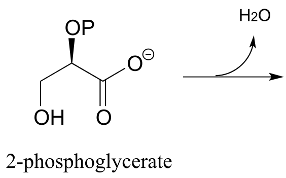
Exercise13.10: N-ethylmaleimide (NEM) is an irreversible inhibitor of many enzymes that contain active site cysteine residues. Inactivation occurs through conjugate addition of cysteine to NEM: show the structure of the labeled residue. (Michael addition)

fig 54
Exercise 13.11: Argininosuccinate lyase (4.3.2.1), an enzyme in the metabolic pathway that serves to eliminate nitrogen from your body in the form of urea in urine, catalyzes this β-elimination step:

fig 54
Propose a complete mechanism. Hint: Don’t be intimidated by the size or complexity of the substrate - review the β-elimination mechanism, then identify the leaving group and breaking bond, the α-carbon which loses a proton, the carbonyl that serves to stabilize the negatively-charged (enolate) intermediate, and the double bond that forms as a result of the elimination. You may want to designate an appropriate ‘R’ group to reduce the amount of drawing.
13.5: Carboxylation by the Rubisco enzyme#
It is difficult to overstate the importance to biology and ecology of the enzymatic reaction we are going to see next: ribulose 1,5-bisphosphate carboxylase (Rubisco) plays a key role in closing the ‘carbon cycle’ in our biosphere, catalyzing the incorporation of a carbon atom - in the form of carbon dioxide from the atmosphere - into organic metabolites and eventually into carbohydrates, lipids, nucleic acids, and all of the other organic molecules in living things. Rubisco is probably the most abundant enzyme on the planet.
You can think of a carboxylation reaction as essentially a special kind of aldol reaction, except that the carbonyl electrophile being attacked by the enolate is CO2 rather than a ketone or aldehyde:
Mechanism for carboxylation of an enolate

fig 38
Here is the full Rubisco reaction. Notice that the carbon dioxide (in blue) becomes incorporated into one of the two phosphoglycerate products.
The Rubisco reaction
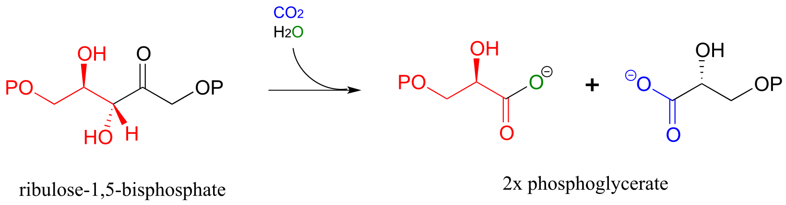
Mechanism:
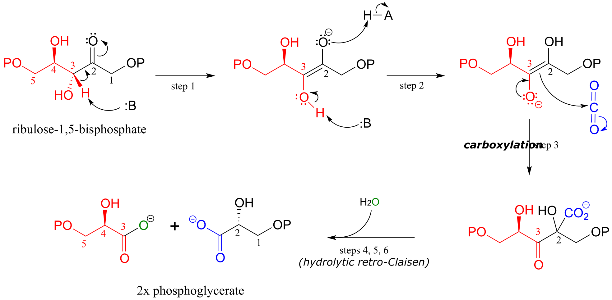
fig 37 fig 39
The mechanism for the Rubisco reaction is somewhat involved, but if we break it down into its individual steps, it is not terribly difficult to follow. In step 1, an α-carbon on ribulose 1,5-bisphosphate is deprotonated to form an enolate. In step 2, the oxygen at carbon #3 is deprotonated while the oxygen at carbon #2 is protonated: combined, these two steps have the effect of creating a different enolate intermediate and making carbon #2, rather than carbon #3, into the nucleophile for an aldol-like addition to CO2 (step 3). Carbon dioxide has now been ‘fixed’ into organic form - it has become a carboxylate group on a six-carbon sugar derivative. Steps 4, 5, and 6 make up a hydrolytic retro-Claisen cleavage reaction (in other words, water is the bond-breaking nucleophile) producing two molecules of 3-phosphoglycerate. Phosphoglycerate is channeled into the gluconeogenesis pathway to eventually become glucose.
Exercise 13.12: Draw out the full mechanism for steps 4-6 in the Rubisco reaction.
Key learning objectives for this chapter#
Before moving on to the next chapter, you should:
Be able to draw reasonable mechanisms for reactions of the following type:
Decarboxylation of a β-carboxy ketone or aldehyde
Claisen condensation and retro-Claisen cleavage
Hybrid decarboxylation-Claisen condensation
Conjugate addition
E1cb elimination
Understand (though not necessarily memorize) the fatty acid synthesis and degradation cycles, and how the Claisen. retro-Claisen, conjugate addition, and E1cb elimination steps fit in.
Be able to draw a complete mechanism for the Rubisco reaction.
Problems#
P13.1: Tetrahydrolipastatin, a potent inhibitor of lipase enzymes (see section 11.6) is being tested as a possible anti-obesity drug. Lipastatin, a close derivative, is synthesized by the bacterium Streptomyces toxytricini. The biosynthetic pathway involves the following step shown below - draw a likely mechanism*.* (J. Biol. Chem. 1997, 272, 867).

P13.2: The metabolism of camphor by some bacteria involves the step below. Draw a likely mechanism. (J. Biol. Chem 2004, 279, 31312)

P13.3: The glucogeogenesis pathway, by which glucose is synthesized from pyruvate, begins with a reaction catalyzed by pyruvate carboxylase. The enzyme requires the CO2-carrying biotin to function, but the final step is thought to be the simple carboxylation of pyruvate by free carbon dioxide (Biochem. J. 2008, 413, 369). Draw a mechanism for this step.

P13.4: Draw a reasonable mechanism for this decarboxylation step in tryptophan biosynthesis (EC 4.1.1.45). Hint: a tautomerization step precedes the decarboxylation.

P13.5: The biosynthetic pathway for the antibiotic compound rabelomycin begins with the condensation of malonyl CoA and acetyl CoA. Predict the product of this reaction, and propose a likely mechanism. (Org. Lett. 2010 12, 2814.)

P13.6 Predict the product of this decarboxylation step in the biosynthesis of the amino acid tyrosine. Hint: think about comparative stability when you are considering where protonation will occur!

P13.7: Show a likely mechanism for this reaction from lysine biosynthesis:

P13.8: Compound A undergoes hydrolytic cleavage in some fungi to form the products shown. Predict the structure of A. (J. Biol. Chem. 2007, 282, 9581)

P13.9: Propose a mechanism for the following reaction from the gluconeogenesis pathway (EC 4.1.1.32):
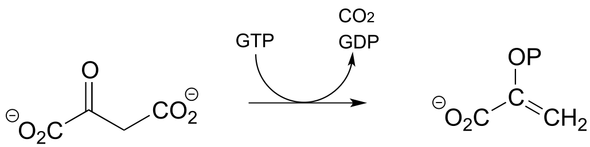
P13.10: Dehydroquinate undergoes dehydration (EC 4.2.1.10) in aromatic amino acid biosynthesis. Experimental and genomic evidence points to a lysine-linked iminium intermediate. More than one dehydration product is possible for dehydroquinate, but in this case the most stable product is the one that forms. Predict the structure of the product, explain why it is the more stable of the possible dehydration products, and draw a mechanism for its formation.
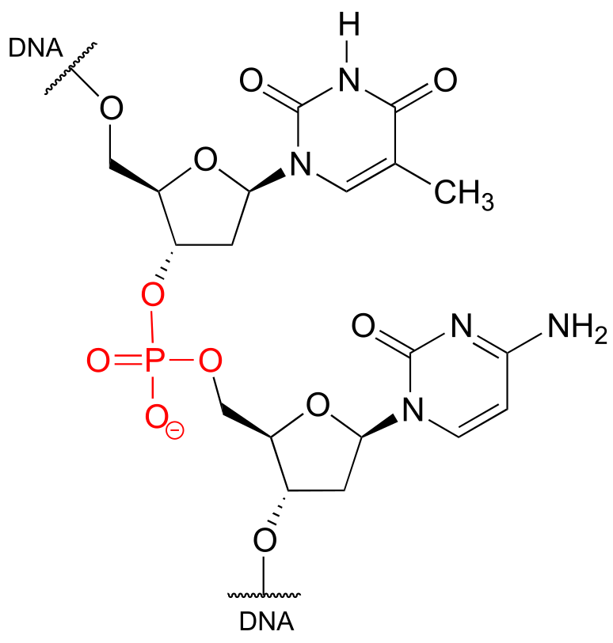
P13.11: The enzyme catalyzing the reaction below, thought to participate in the fermentation of lysine in bacteria, was recently identified and characterized (J. Biol. Chem. 2011, 286, 27399). Propose a likely mechanism. Hint: the mechanism involves two separate carbon-carbon bond forming and bond breaking steps. C1 of acetyl CoA is identified with a red dot to help you trace it through to the product.

P13.12: Menaquinone (Vitamin K) biosynthesis in bacteria includes the following step:
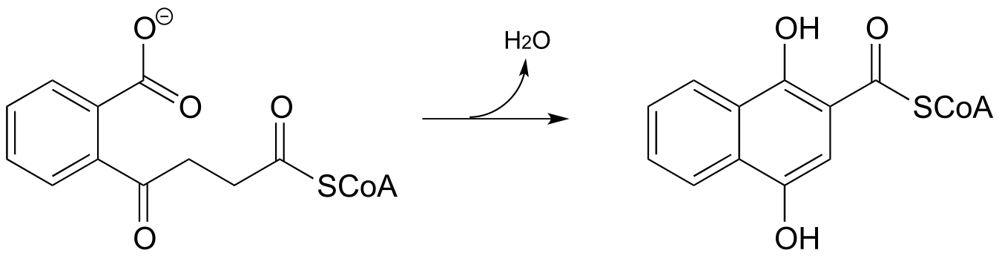Propose a likely mechanism. Hint: the mechanism involves a Claisen condensation step which is unusual in that the electrophile is a carboxylic acid group rather than a thioester. What is the driving force that allows this unusual step to occur? (J. Biol. Chem. 2010, 285, 30159)
P13.13: 4-maleylacetoacetate isomerase (EC 5.2.1.2) catalyzes the following cis to trans alkene isomerization as part of the degradation of the aromatic amino acids phenylalanine and tyrosine.

fig5
The enzyme uses the thiol-containing coenzyme glutathione, which is also involved in the formation of disulfide bonds in proteins, but in this case glutathione serves as a ‘thiol group for hire’. The mechanism for the reaction is essentially a reversible conjugate addition of glutathione. Draw out the steps for this mechanism, showing how the cis-trans isomerization could be accomplished. Also, explain why the equilibrium for this reaction favors 4-fumarylacetoacetate. The structure of glutathione is shown, but you can use the abbreviation GSH in your mechanism.
P13.14: Based on the mechanistic patterns you have studied in this chapter, propose a likely mechanism for this final reaction in the degradation of the amino acid cysteine in mammals.

P13.15: Propose a mechanism for the following carboxylation reaction (EC 6.4.1.4) in the leucine degradation pathway. The complete reaction is dependent on the CO2-carrying coenzyme biotin as well as ATP, but assume in your mechanism that the actual carboxylation step occurs with free CO2 (you don’t need to account for the role played by biotin or ATP).58, bottom)

P13.16: Propose a mechanism for the following reaction, which is part of the degradation pathway for the nucleotide uridine.
(

P13.17: Illustrated below is a series of reactions in the degradation pathway for the amino acid methionine. In step 1, an alcohol group on C3 is oxidized to a ketone, and in step 4 the ketone is reduced back to an alcohol - we will study these reactions in chapter X. In steps 2 and 3, the thiol (homocysteine) is replaced by water - but this does NOT involve a nucleophilic substitution process.
a) Draw a likely mechanism for step 2
b) Draw a likely mechanism for step 3
c) How does the involvement of the redox steps (steps 1 and 4) provide evidence that overall substitution of water for homocysteine is not a nucleophilic substitution?

P13.18: (Challenging!) A recently discovered reaction in the biosynthesis of rhizoxin, a potent virulence factor in the rice-seedling blight fungus Rhizopus microsporus, is illustrated below (Angewandte Chemie 2009, 48, 5001). The reaction takes place at the intersection of two ‘modules’ of a multi-enzyme complex, and provides an example of a biochemical conjugate addition step that results in the formation of a new carbon-carbon bond (conjugate addition of a carbon nucleophile is referred to as a Michael addition). Draw a likely mechanism.

P13.19:
a) The ‘acetoacetic ester synthesis’ is a useful carbon-carbon bond-forming reaction in the laboratory. The reaction mechanism is described as α-carbon deprotonation to form an enolate, followed by SN2 alkylation, ester hydrolysis, and decarboxylation. Below is an example:
 Draw out a reasonable
mechanism, taking care to propose reactive intermediates that are
appropriate given the basic or acidic conditions present (note that the
reaction starts under basic conditions, then is later acidified).
Draw out a reasonable
mechanism, taking care to propose reactive intermediates that are
appropriate given the basic or acidic conditions present (note that the
reaction starts under basic conditions, then is later acidified).
b) Suggest starting compounds for the synthesis of 4-phenyl-2-butanone by the acetoacetic ester reaction.
c) A very useful ring-forming reaction in laboratory synthesis is called ‘Robinson annulation’ (Sir Robert Robinson was an English chemist who won the 1947 Nobel Prize in Chemistry, and the term ‘annulation’ comes from the Latin annulus, meaning ‘ring’.) The reaction, which takes place in basic conditions, consists of a conjugate (Michael) addition step, followed by aldol addition and finally dehydration (β-elimination of water). A typical example is shown below, with carbons numbered to help you to follow the course of the reaction.

Draw a mechanism for this reaction (when proposing intermediate species, keep in mind that the reaction is occurring in a basic environment, and choose protonation states accordingly).
d) Propose starting compounds for the Robinson annulation synthesis of the following product:

P13.20: The reaction shown below, catalyzed by orotidine monophosphate decarboxylase (EC 4.1.1.23), is one of the most extensively studied enzymatic transformations. It is known to occur without the participation of any coenzymes.
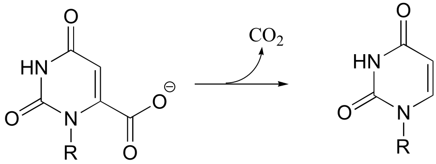
(
a) Look at the reaction closely: what is unique about it?
b) In 1997, a paper was published in which the authors predicted, based on theoretical calculations, that this reaction proceeded through a carbene intermediate (carbenes are not covered in this text – you may need to look them up). This was prior to the publication of an x-ray crystal structure. What kind of active site environment does this imply?
c) When the crystal structure was published a few years later, we learned that an aspartate residue (predicted to be negatively charged) is positioned very near the substrate carboxylate group, and a lysine residue (predicted to be positively charged) is positioned nearby on the opposite side (see figure below). What roles do you think were predicted for these two active site residues?

P13.21: In the histidine degradation pathway, histidine undergoes elimination of ammonia to form trans-urocanate. The enzyme catalyzing this reaction (E.C. 4.3.1.3) has been shown to use an unusual ‘coenzyme’, 4-methylideneimidazole-5-one (MIO), which is formed from the cyclization of an alanine-serine-glycine stretch of the enzyme itself.
A mechanism has been proposed in which the MIO coenzyme plays the role of electron sink, and the intermediate shown below forms.

Propose a full mechanism for this reaction according to this information.
P13.22: The product that forms in the reaction between benzaldehyde and acetophenone (along with a catalytic amount of sodium hydroxide) has a 1H-NMR spectrum in which all of the signals are between 7-8 ppm. Give the structure of product.